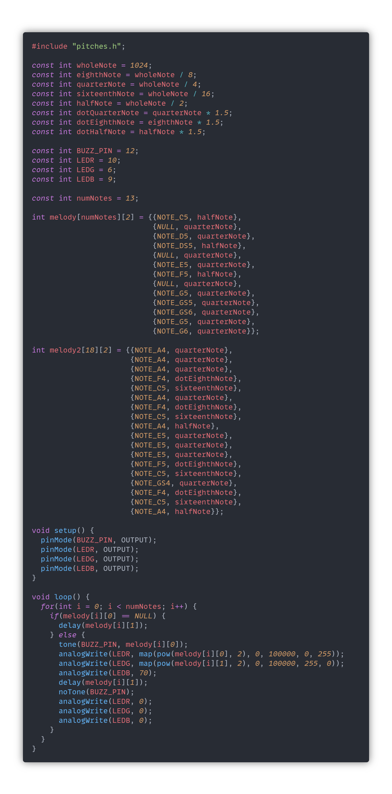

Lab 5: Revenge of the Synth
Henry Waill - 3/8/2023
Description
In the last lab, we introduced analog inputs to our Arduino circuits; In this lab we will attempt to employ analog output. The arduino, however, is incapable of generating true analog signals. That would require a dedicated Digital/Analog Converter (DAC). Instead, we can approximate analog signals through a technique called Pulse Width Modulation (PWM.)
Materials
All of the materials required to complete this lab, with the exception of the multimeter, were supplied in the ELEGOO Arduino Uno Starter Kit.
- Arduino (Elegoo) Uno R3 Controller Board
- USB Cable
- Breadboard Jumper Wires
- Resistors
- RGB LED
- Multimeter
- Passive Buzzer
- Joystick Module
Part 1: Wiring Up the RGB LED
To begin this lab, we started by connecting up our RGB LED. This LED has four terminals, which is just because an RGB LED is essentially just 3 LEDs in one housing. Because of this, we can hook it up the same way, with a resistor in series with each of the anodes, and the cathode connected to ground. When choosing the pins to connect to, we must connect to the Arduino's PWM-enabled pins, marked with a tilde, "~." Below is an image of my circuit:

And here is a schematic of the the circuit:
To control the brightness of the LEDs, we can use analogWrite() instead of digitalWrite() to use PWM. analogWrite() can set the duty cycle from 0% to 100% with values from 0 to 255. Here's a sketch that successfully cycles the LED through four different colors:

And here are images of the four colors:


Part 2: Dynamic Color Changer With Joystick
Next, we want to write a program that allows the LED colors to respond to user input. This can be easily done by adding the same joystick circuit that we used in the last lab. By mapping the analog signal on the input pins A0 and A1 to the output of two of our LED's we can make a fun color-changing experience. Here's the code I used and a video of the sketch in action:

Part 3: Musical Notes with a Passive Buzzer
The Passive Buzzer is very simple to set up; It can be connected to any of the digital pins, and to ground. It is important that the anode and cathode are connected correctly, or we risk damaging the component. Here is an image of the buzzer installed:

We then want to test our buzzer by adapting the default Blink sketch to use the buzzer instead of an LED. Instead of using digitalWrite(), we can use tone() and noTone().

And here's a video of the sketch in action:
We then created a header file to make accessing musical note frequencies a little easier. Here's a picture of that setup. Note that I opt to use Visual Studio Code as my development environment, instead of the default Arduino IDE.

With this new addition, we can more easily make the buzzer play different notes! Here's the same blink example, but with a new note from our pitches.h header file:

Part 4: Melody from the Buzzer
We can take these concepts further by creating a melody from individual notes. Here's a rather tedious way to set that up:
This program sets a few constants at the top to help make the rhythms easier to understand and plays notes for specified amounts of time to create this melody (which strays from the original at the end.)
We then were tasked with creating our own melody, and the limitations of our original approach became more clear. To change or write melodies, we must write a lot of extra fluff for each note. I decided to streamline that process by storing the melody in a 2-dimensional array and looping through that array to play the melody. This allows me to make changes more quickly. Here's what that looks like with my custom melody, and note the table of notes is built into the code:

Extra Volt: Music Visualizer
Making a music visualizer is a simple extension of the code we already have, but it would have been much more tedious if I hadn't streamlined the approach with a for() loop. The way I have things set up, I really only have 2 values to work with, as I did away with the "dotted" attribute of note durations. Because of this, I decided to keep one of the LEDs' colors constant (when on,) and experiment with mapping the different values of note frequency and note length to the brightness of the other two LEDs. Here's the code and videos of the two melodies:
